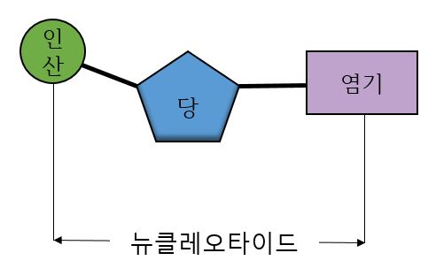
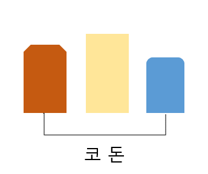
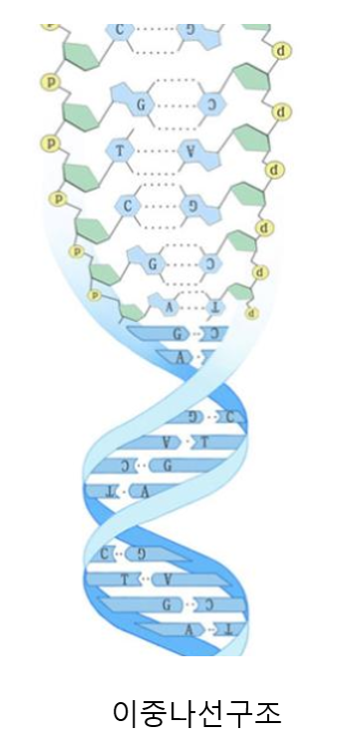
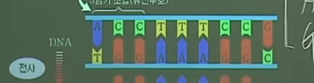

DNA(DeoxyriboNucleic Acid, 디옥시리보 핵산)는 뉴클레오타이드의 중합체인 두 개의 긴 가닥이 서로 꼬여있는 이중나선 구조로 되어있는 고분자화합물이다.
세포 핵에서 발견되어 핵산이라는 이름이 붙게 되었지만 미토콘드리아 DNA와 같이 핵 이외의 세포소기관도 독립된 DNA를 갖고 있는 것이 있다.
DNA는 4 종류의 뉴클레오타이드가 중합 과정을 통해 연결된 가닥으로 이루어져 있다. 이 가닥은 사이토신, 구아닌, 아데닌, 티민는 독특한 핵염기로 구분되기 때문에 흔히 DNA 염기서열 이라고 부른다.
DNA 염기서열은 유전정보를 나타내는 유전자 구간과 그렇지 않은 비부호화 DNA 구간으로 나눌 수 있다. 과거에 기능을 가진 유전자였더라도 돌연변이를 통해 기능을 상실한 슈도진이 되면 비부호화 DNA가 된다.
 
DNA는 스스로를 복제하고 유전정보를 통해 유전자 발현이 일어나게 한다. 유전자는 DNA 사슬의 특정 구간으로 실제 단백질 형성과 같은 발현에 관여하는 엑손 구간과 그렇지 않은 인트론을 포함한다.
DNA가 직접 유전자 S발현을 실행하는 것은 아니며 실제 발현 과정은 DNA에서 전사된 전령 RNA(mRNA)가 지닌 코돈에 의해 진행된다.
코돈은 세 개의 염기서열이 묶인 유전단위로 시작 코돈과 종결 코돈 그리고 그 사이에 실제 아미노산 결합을 지시하는 코돈들로 이루어져 있다. mRNA는 리보솜에서 효소와 같은 단백질을 합성하게 한다.

DNA는 1869년 스위스의 프리드리히 미셔(Friedrich Miescher)가 처음 발견했다. 그는 세포 핵 안에서 발견한 산이라는 의미로 뉴클레인이라고 불렀다.
이후 DNA는 유전의 원인으로 오랫동안 지목되어 왔으며 1944년 오즈월드 에이버리의 형질전환 실험을 통해 DNA가 유전물질임이 확인되었고 1952년 알프레드 허시(Alfred Hershey)와 마사 체이스(Martha Chase)의 허시-체이스 실험으로 확정되었다.
DNA의 이중나선 구조는 제임스 왓슨과 프랜시스 크릭이 1953년 네이처지에 실은 논문에서 처음으로 밝혔다.
그러나 DNA가 이중나선 구조를 가졌다는 결정적인 증거인 DNA의 X선 회절 사진은 로절린드 프랭클린이 찍은 것이었으며,
그녀와 앙숙이었던 동료 과학자 윌킨스가 프랭클린의 사전 허락 없이 회절사진을 분석하고 왓슨과 크릭에게 제공함으로써 왓슨과 크릭의 연구가 가능했기에 이후 그들은 "프랭클린의 영광을 도둑질했다"는 비판을 받았다. 한편 프랭클린은 암으로 1958년에 사망하여 노벨상 후보에 오르지 못하였다.
구조
DNA는 뉴클레오타이드 중합체 두 가닥이 서로 꼬여있는 이중나선 구조로 되어있다.
DNA를 이루는 뉴클레오타이드는 디옥시리보스를 중심으로 한 쪽에는 인산염이 결합되어 있고 다른 한 쪽에는 4 종류의 핵염기 가운데 하나가 결합되어 있다.
디옥시리보스와 인산기가 중합 과정을 통해 사슬 한 가닥의 뼈대를 이루고 핵염기들이 서로 상보적인 수소 결합을 통해 염기쌍을 이루며 이중나선을 만든다.[3]
이중나선
DNA가 나선 모양으로 꼬이는 것은 일차적으로 디옥시리보스와 인산의 중합 형성으로 생기는 구조 때문이다.
리보스와 디옥시리보스는 모두 탄소 5개로 이루어진 오탄당으로 단원자 산소를 매개로 오각형의 구조를 이룬다.
단원자 산소에서 시계방향으로 각 탄소마다 1번에서 5번까지 번호를 붙여 위치를 나타낸다. 뉴클레오타이드에서 디옥시리보스의 1번 탄소는 핵염기와 결합하고,
2번과 3번은 하이드록시기(-OH)와 결합하며 4번 탄소와 연결된 5번 탄소가 인산염과 결합한다.
그리고 다른 뉴클레오타이드와 결합하는 것은 5번 탄소에 연결된 인산염이다. 따라서 DNA 염기서열 사슬은 언제나 인산염을 사이에 두고 5번 탄소와 3번 탄소가 연결되게 된다. 이를 5' → 3' 연결이라고 부른다.
인산염의 결합 위치때문에 DNA 가닥은 3차원에서 나선 구조를 지니며 꼬이게 된다. 한편, 두 가닥의 염기서열 뼈대에 연결된 핵염기가 상보적이기 때문에 한 쪽 가닥 말단이
3번 탄소라면 상대쪽은 5번 탄소이게 되고 그 반대로 한 쪽의 말단이 5번 탄소라면 상대쪽은 3번이게 된다.
그 결과 두 염기서열 뼈대는 서로 반대 방향으로 나란한 역평행성을 보인다. 이와 같이 하여 DNA는 두 개의 염기서열 뼈대가 서로 꼬인 이중나선 구조가 되고
두 사슬의 핵염기가 마치 사다리처럼 상보적으로 결합하여 안정적 구조를 유지하게 된다.
기능
DNA에는 생물의 유전정보가 담겨있다. 그러나 DNA의 염기서열 모두가 유전자 발현에 관여하는 것은 아니다. 실제 유전형질의 발현에 관여하는 염기서열을 유전자라고 하고 그렇지 않은 부분을 비부호화 DNA라고 한다.
비부호화 DNA 가운데에는 예전에는 유전자로 기능하였으나 돌연변이 등으로 더 이상 기능하지 않는 슈도진이 포함되어 있다.
유전자가 직접 생물을 이루는 물질을 만들지는 않는다. 유전자에는 어떤 것을 어떻게 만들 지에 대한 정보만이 담겨있다.
따라서 DNA는 생물의 설계도를 담고 있는 청사진이라기 보다는 마치 요리책 처럼 해야할 작업을 순서대로 적은 레시피에 가깝다.
DNA의 정보는 여러 단계를 거쳐 가공되고 처리되어 최종 결과물 생성에 관여하게 된다. 따라서 DNA의 기능은 다음의 두 가지로 정리할 수 있다.
● DNA는 스스로를 복제한다.
● DNA는 유전정보를 보관한다.
전사
전사(영어: transcription)는 DNA에 적혀 있는 유전정보를 mRNA로 옮기는 과정이다.
RNA 중합효소가 이 과정을 맡는다. 기본적으로는 DNA 복제과정 중 한쪽 부분과 유사하나, 전사 과정에서는 한쪽 가닥만을 정보로 삼아 옮겨적고 RNA가 합성된 이후 DNA는 원상복구된다.
원핵세포의 경우 전사된 mRNA는 그대로 다음 과정인 번역과정으로 넘어가게 되나, 진핵세포의 경우 중간에 끼어 있는 인트론을 제거하고 엑손만을
남겨야 하므로 만들어진 mRNA를 가공하는 과정을 거친다. DNA의 한 가닥을 주형으로 하여 RNA를 만들어 내는 것을 DNA-의존적 RNA 중합효소라고 하며, 전사는 이 효소가 담당한다.
RNA를 중간 물질로 활용함으로써 유전자 발현을 용이하게 조절할 수 있다, 예를 들어 하나의 유전자로부터 여러 가닥의 RNA를 생성하여 단기간에 충분한 양의 단백질을 생성할 수 있다.

또 유전 정보를 담고 있는 DNA가 직접 단백질을 생성하면 반응성이 큰 아미노산 등에 의해 유전 정보가 손상될 수 있는데 이를 방지하여 유전정보와 안전성을 획득할 수 있다.